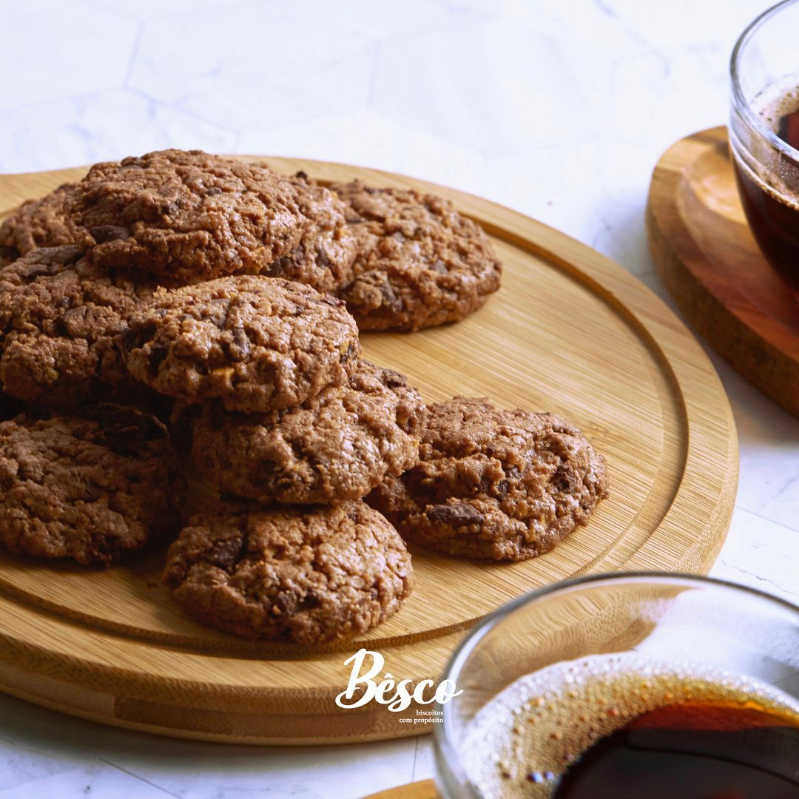
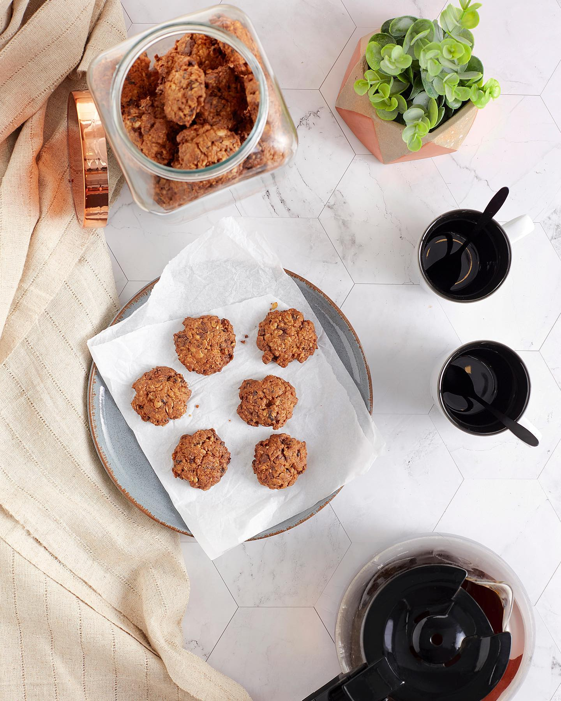
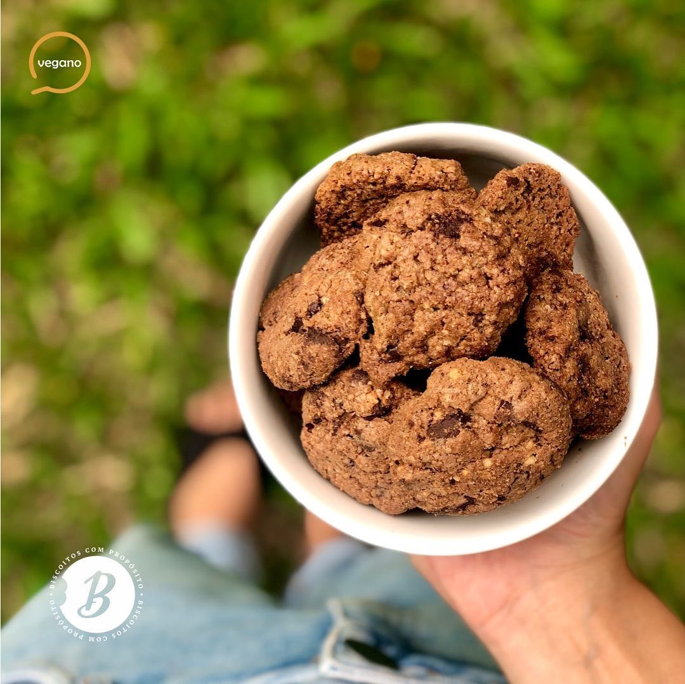
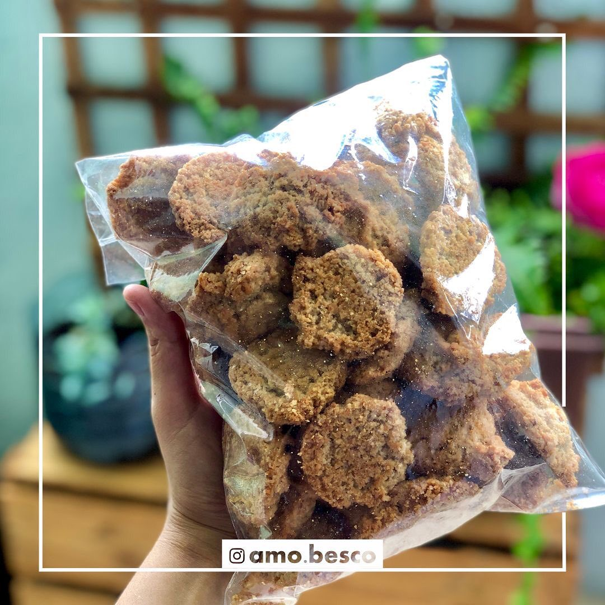

Linha · Integral
Grãos integrais selecionados, sem conservantes e sem nada difícil de pronunciar. Mais fibras, mais sabor, mais propósito.
Para quem é
Para quem busca mais fibras e ingredientes de verdade no dia a dia. Grãos integrais selecionados, sem conservantes e com receita própria.
Crocante, gostoso e sem nada difícil de pronunciar — do nosso jeito artesanalmente profissional.

Explore
Integral, leve e crocante — sem glúten.
Ver a linha →
Zero lactose, com a mesma maciez de sempre.
Ver a linha →Adoçado de forma natural, ideal para diabéticos.
Ver a linha →
Sem nenhum ingrediente de origem animal.
Ver a linha →
O clássico Bêsco, artesanal e marcante.
Ver a linha →Para revendedores
Margem justa, logística pronta (SP em 24h) e capacidade para crescer com você.